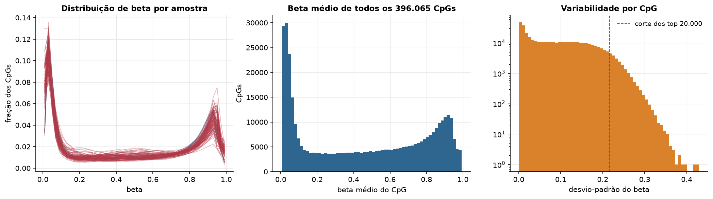
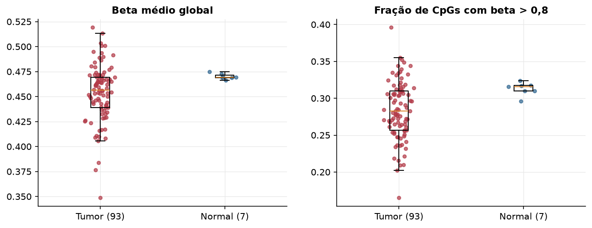
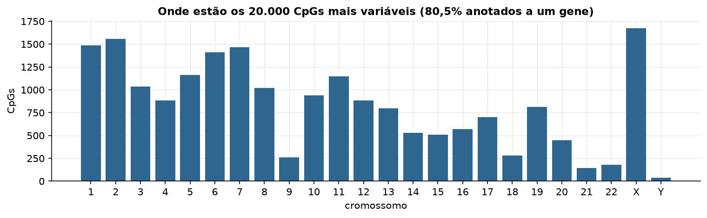
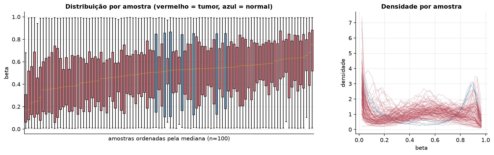
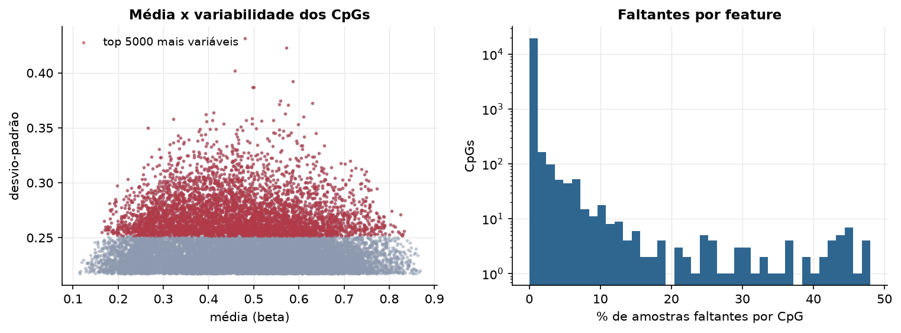
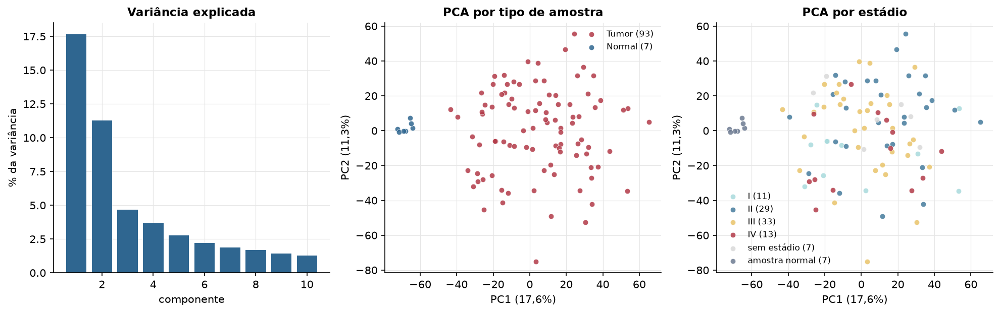
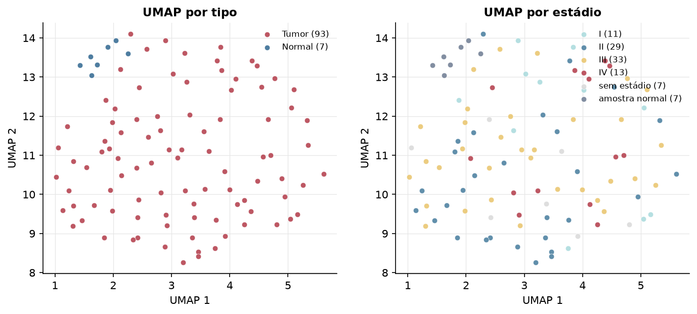
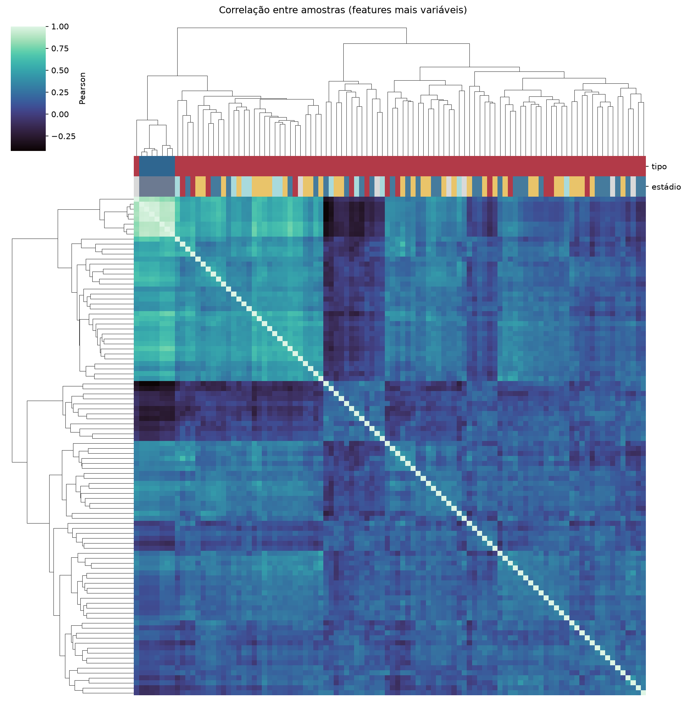
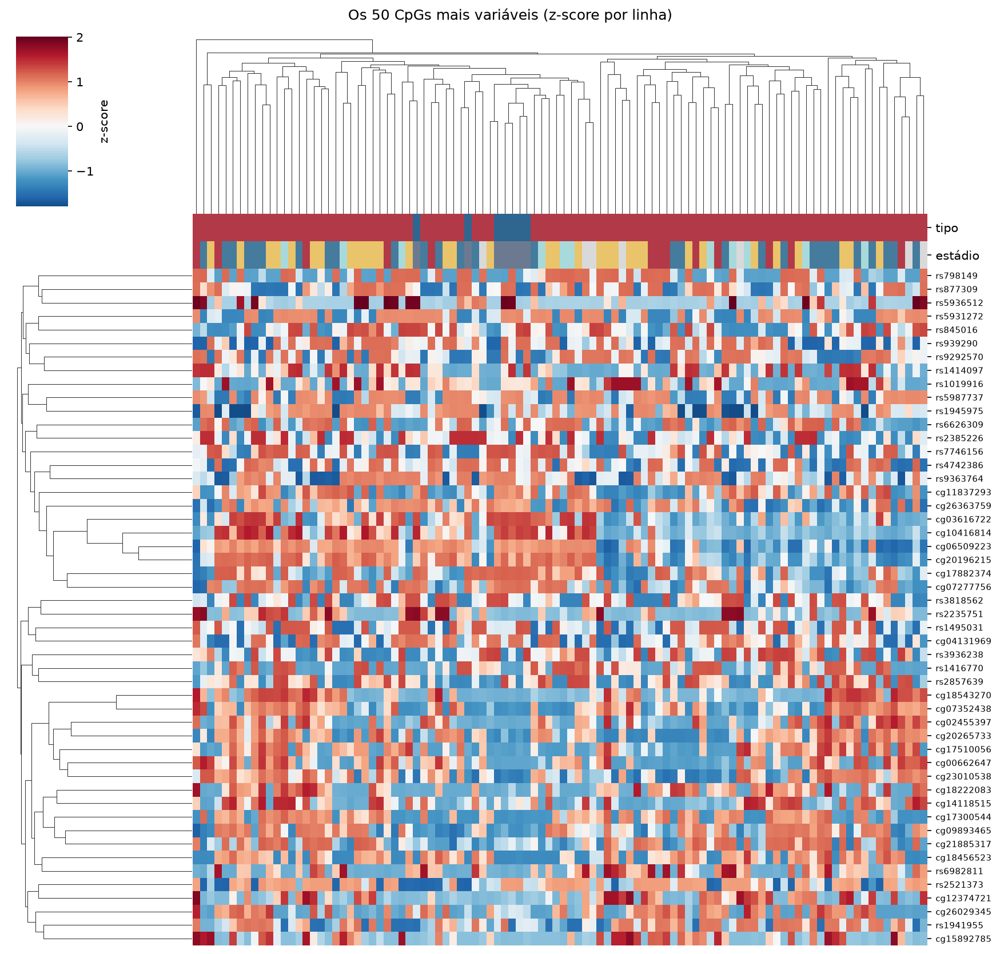
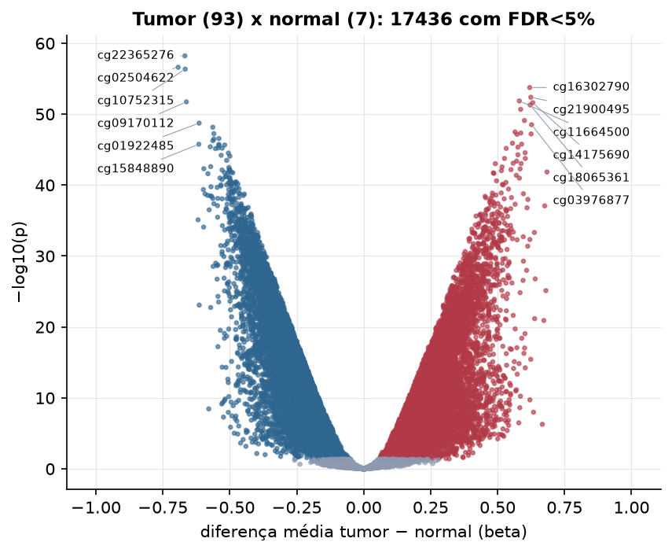

READ · Metilação do DNA (450k)
Illumina Infinium HumanMethylation450, valores beta (0 a 1) · gerado em 22/10/2026 03:38
396.065CpGs medidos
384.770CpGs sem faltante
20.000CpGs
93amostras tumorais
7amostras normais
0,2%valores faltantes
Fonte: PanCanAtlas HM450 via API do Xena
O array tem ~485 mil CpGs. Para não ocupar espaço, guardamos estatísticas de todos os CpGs e só os 20.000 mais variáveis para PCA, UMAP e heatmaps.
Principais resultados
- A distribuição de beta é bimodal: a maioria dos CpGs está quase toda desmetilada (perto de 0, típico de ilhas CpG em promotores) ou quase toda metilada (perto de 1, corpo gênico e regiões intergênicas). 40,2% dos CpGs têm beta médio intermediário (0,2 a 0,8).
- Beta médio global: 0,456 nos tumores e 0,469 nos normais (hipometilação global no tumor, como é comum em câncer).
- 20.000 CpGs medidos em 100 amostras (93 tumorais e 7 normais); 0,2% dos valores estão faltando.
- Os dois primeiros componentes principais explicam 17,6% e 11,3% da variância das features mais variáveis.
- Correlação mediana entre amostras: 0,20.
- Tumor x normal: 17436 CpGs diferentes com FDR < 5% (8218 maiores no tumor, 9218 maiores no normal; 7 pacientes têm o par tumor-normal).
- Mais aumentados no tumor: cg16302790, cg21900495, cg11664500, cg14175690, cg18065361, cg22871668, cg00817367, cg03976877.
- Mais reduzidos no tumor: cg22365276, cg02504622, cg10752315, cg09170112, cg01922485, cg04011469, cg23081534, cg00135293.
- Associações clínicas com p < 0,05 nos componentes principais: PC1 com estádio (p=0.027); PC3 com sexo (p=9.8e-16); PC3 com idade (p=0.048).
Distribuição global



Exploração dos CpGs mais variáveis
Distribuição dos valores


Estrutura das amostras




Tumor x normal

Features mais diferentes entre tumor e normal
| diferenca_tumor_menos_normal | t | p | fdr | |
|---|---|---|---|---|
| cg22365276 | -0.668 | -36.966 | 5.96e-59 | 1.19e-54 |
| cg02504622 | -0.693 | -36.342 | 2.41e-57 | 2.41e-53 |
| cg10752315 | -0.666 | -35.42 | 4.44e-57 | 2.96e-53 |
| cg16302790 | 0.62 | 33.284 | 1.75e-54 | 8.74e-51 |
| cg21900495 | 0.624 | 32.717 | 4.08e-53 | 1.63e-49 |
| cg11664500 | 0.581 | 31.345 | 1.37e-52 | 4.56e-49 |
| cg09170112 | -0.662 | -31.284 | 1.84e-52 | 5.27e-49 |
| cg14175690 | 0.631 | 30.983 | 2.4e-52 | 5.99e-49 |
| cg18065361 | 0.621 | 31.55 | 5.06e-52 | 1.12e-48 |
| cg22871668 | 0.586 | 30.262 | 2.07e-51 | 4.14e-48 |
| cg00817367 | 0.6 | 29.262 | 7.85e-50 | 1.43e-46 |
| cg01922485 | -0.615 | -28.733 | 1.84e-49 | 3.07e-46 |
| cg03976877 | 0.627 | 31.646 | 3.04e-49 | 4.68e-46 |
| cg04011469 | -0.563 | -28.285 | 6.93e-49 | 9.91e-46 |
| cg22757824 | 0.565 | 29.913 | 3.19e-48 | 4.26e-45 |
| cg27650175 | 0.587 | 27.668 | 4.45e-48 | 5.56e-45 |
| cg23081534 | -0.559 | -27.775 | 5.53e-48 | 6.51e-45 |
| cg02030008 | 0.625 | 27.621 | 6.08e-48 | 6.76e-45 |
| cg09849405 | 0.572 | 27.52 | 7e-48 | 7.37e-45 |
| cg00135293 | -0.541 | -27.167 | 2.69e-47 | 2.69e-44 |
| cg17400812 | -0.559 | -27.243 | 3.08e-47 | 2.94e-44 |
| cg19801646 | -0.563 | -27.607 | 5.49e-47 | 4.99e-44 |
| cg14287112 | 0.556 | 27.432 | 1.25e-46 | 1.08e-43 |
| cg03257172 | 0.59 | 26.85 | 1.68e-46 | 1.39e-43 |
| cg15848890 | -0.616 | -26.664 | 1.74e-46 | 1.39e-43 |
| cg00927226 | -0.541 | -26.486 | 1.84e-46 | 1.42e-43 |
| cg23295754 | -0.519 | -26.818 | 2.22e-46 | 1.64e-43 |
| cg06271630 | -0.541 | -26.54 | 2.47e-46 | 1.77e-43 |
| cg19153095 | -0.573 | -29.599 | 3.92e-46 | 2.7e-43 |
| cg27200446 | 0.576 | 27.247 | 4.41e-46 | 2.94e-43 |
Associação com variáveis clínicas
p-valores da associação dos três primeiros componentes principais (só tumores) com estádio (Kruskal-Wallis), sexo (Mann-Whitney), idade (Spearman) e sobrevida global (Cox univariado).
| estádio (Kruskal) | sexo (Mann-Whitney) | idade (Spearman) | sobrevida OS (Cox) | |
|---|---|---|---|---|
| PC1 (12,5%) | 0.028 | 0.541 | 0.096 | 0.252 |
| PC2 (12,2%) | 0.317 | 0.206 | 0.505 | 0.983 |
| PC3 (4,7%) | 0.449 | 9.78e-16 | 0.048 | 0.621 |